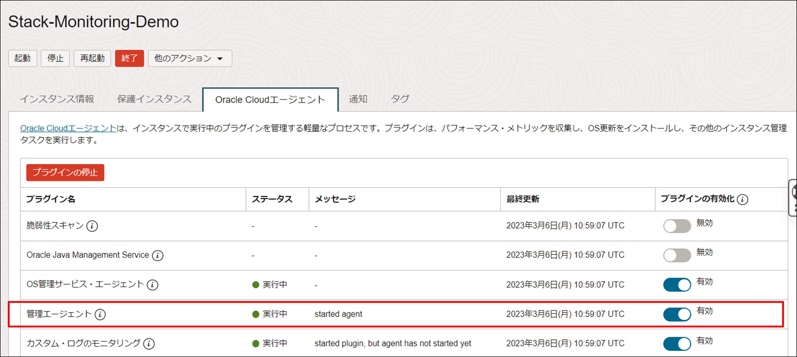
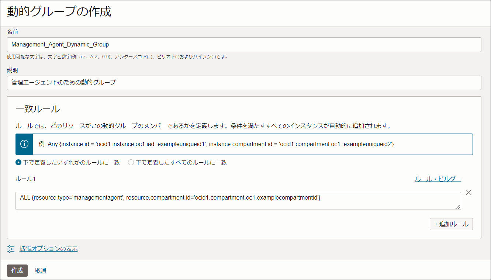
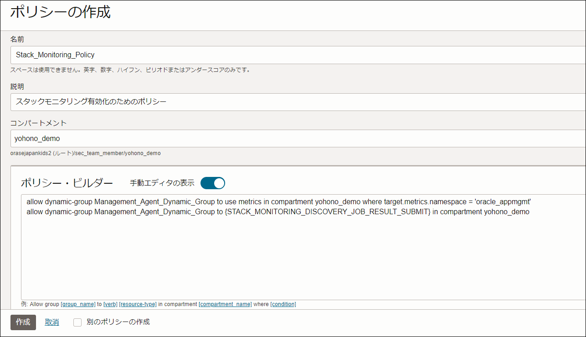
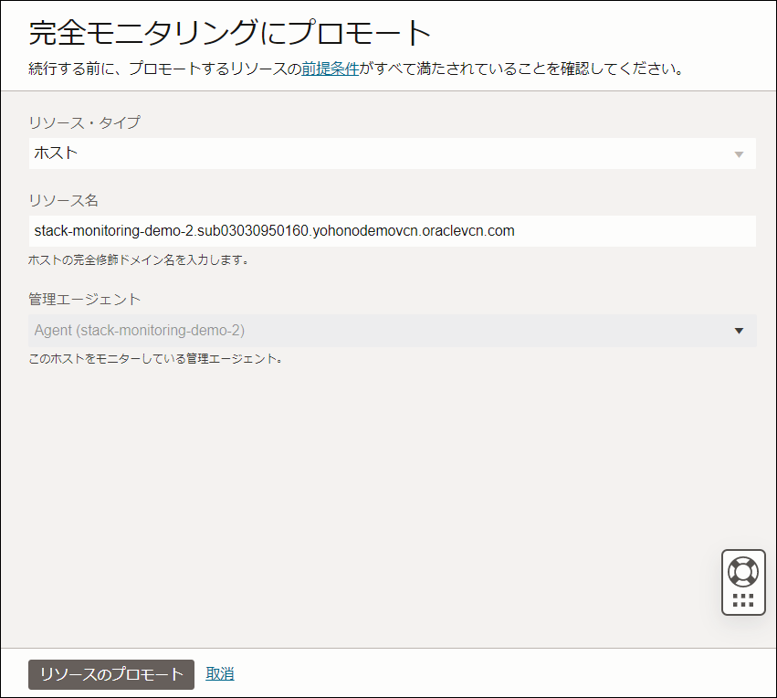
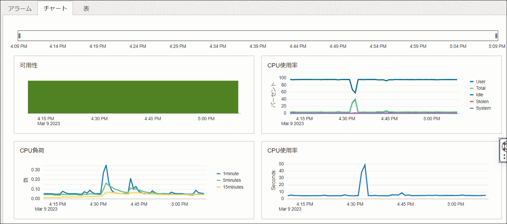
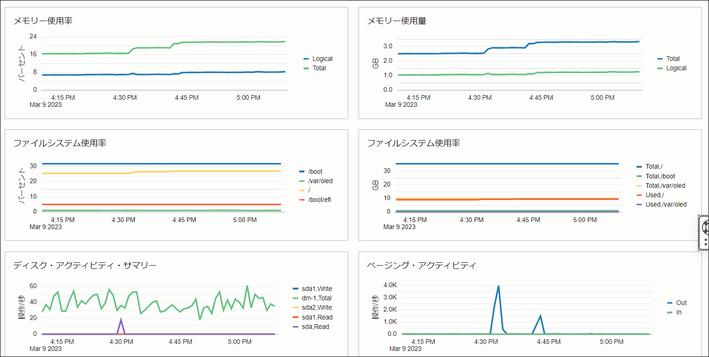
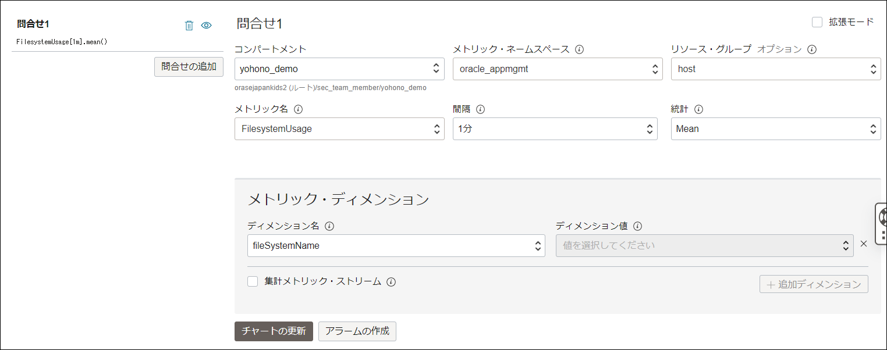

チュートリアル概要 :
このチュートリアルでは、Stack Monitoring を使用して OCI Compute のメトリック監視を有効化するまでのステップをご紹介します。
所要時間 : 約20分
前提条件 : テナンシ上で以下のリソースが作成済であること
- コンパートメント
- ユーザー
- ユーザーグループ
- VCN
- OCI Compute (Oracle Linux)
1. 管理エージェントの有効化
Stack Monitoring でモニターするメトリック情報は管理エージェントにより取得されます。OCI Compute のプラットフォーム・イメージに標準でインストールされているクラウド・エージェントのプラグインを使用して、管理エージェントを有効化します。
管理エージェント有効化したいインスタンスの管理画面で「Oracle Cloudエージェント」に移動し、管理エージェントが無効となっている場合は有効にします。

2. 動的グループの作成
OCIコンソールの画面左上ハンバーガーメニューから「アイデンティティとセキュリティ」を選択し、以下のように進んでください。
- アイデンティティ > ドメイン > お使いのドメイン（通常はDefault） > 動的グループ
「動的グループの作成」をクリックし、以下のように入力します。
- 動的グループ名：Management_Agent_Dynamic_Group
- 説明：管理エージェント有効化のための動的グループ
- 一致ルール：下に定義したいずれかのルールに一致
- ルール1には以下のステートメントを記入します。 “ocid1.compartment.oc1.examplecompartmentid”は、監視対象の Compute が配置されているコンパートメントのOCIDに置き換えてください。
ALL {resource.type='managementagent', resource.compartment.id='ocid1.compartment.oc1.examplecompartmentid'}
記入後、「作成」を押して動的グループの作成は完了です。
＜サンプル設定画面＞ 
3. IAMポリシーの作成
OCIコンソールの画面左上ハンバーガーメニューから「アイデンティティとセキュリティ」を選択し、以下のように進んでください。
- アイデンティティ > ポリシー
「ポリシーの作成」をクリックし、以下のように入力します。
- ポリシー名：Stack_Monitoring_Policy
- 説明：スタックモニタリング有効化のためのポリシー
- コンパートメント：ルートコンパートメントを推奨
- ポリシー・ビルダーで「手動エディタの表示」をONにして、以下のステートメントを記入します。 <compartment name> は、監視対象のコンパートメント名に置き換えてください。
allow dynamic-group Management_Agent_Dynamic_Group to use metrics in compartment <compartment name> where target.metrics.namespace = 'oracle_appmgmt'
allow dynamic-group Management_Agent_Dynamic_Group to {STACK_MONITORING_DISCOVERY_JOB_RESULT_SUBMIT} in compartment <compartment name>
記入後、「作成」を押してIAMポリシーの作成は完了です。
＜サンプル設定画面＞ 
ユーザーへのポリシー割り当てについて
このチュートリアルでは、管理者ユーザーを前提としているため、必要最低限のポリシーのみ作成しています。
ユーザーごとに権限を制御する場合はこちらを参考に設定してください。
4. 検出されたリソースをプロモートする
OCIコンソールの画面左上ハンバーガーメニューから「監視および管理」を選択し、以下のように進んでください。
- アプリケーション・パフォーマンス・モニタリング > スタック・モニタリング
画面左側の「リソース」から「完全モニタリングにプロモート」へと進みます。
管理エージェントが適切に有効化されていると、Compute が自動検出されてプロモート対象の一覧に表示されます。

「プロモート」をクリックすると、確認のためのウインドウがポップアップしますので、デフォルトの内容のまま「リソースのプロモート」を実行します。 
Stack Monitoring の課金について
Stack Monitoring で検出された段階では課金は発生しません。メトリック表示も Monitoring から取得されたものに限定されます。プロモートを実行した時点から課金の対象となります。
Stack Monitoring の課金ロジックについては、こちらを参照ください。
プロモートが完了すると、エンタープライズ・サマリーのチャートで、Monitoring では確認できなかった可用性やファイルシステムの使用率などのメトリックが確認できるようになります。 

また、これらのメトリックは Monitoring に連携しているため、シンプルな手順でアラームの通知設定を作成できます。 